Case Study - 01
Eric Laigaie & Alex Lopez
10/5/2021
Introduction:
In this presentation, we will be visualizing and interpreting the characteristics of beers and the breweries that make them. Key variables that will be considered for inference include beer alcohol content (ABV), international bitterness units (IBU), and brewery locations. The goal of this presentation is to provide feedback and responses to the questions you have proposed. We plan to do this by sharing key insights gathered through our analysis but without the statistical jargon. At the end of the presentation, we plan to share additional insight that was not requested but is imperative to Budweiser if the company plans to produce new beers in the near future.
Package Load-In
Beers and Breweries .csv Load-In
# Load in Both Beers and Breweries datasets.
beers <- read_csv(url("https://raw.githubusercontent.com/ericlaigaie/Case-Study-01/main/Beers.csv?token=AL7L5SUDXIN5C6OJ62LPMELBLTXMC"))## Rows: 2410 Columns: 7## -- Column specification --------------------------------------------------------
## Delimiter: ","
## chr (2): Name, Style
## dbl (5): Beer_ID, ABV, IBU, Brewery_id, Ounces##
## i Use `spec()` to retrieve the full column specification for this data.
## i Specify the column types or set `show_col_types = FALSE` to quiet this message.breweries <- read_csv(url("https://raw.githubusercontent.com/ericlaigaie/Case-Study-01/main/Breweries.csv?token=AL7L5SSPZ7B6NQBXJIMILGDBLTXOM"))## Rows: 558 Columns: 4## -- Column specification --------------------------------------------------------
## Delimiter: ","
## chr (3): Name, City, State
## dbl (1): Brew_ID##
## i Use `spec()` to retrieve the full column specification for this data.
## i Specify the column types or set `show_col_types = FALSE` to quiet this message.1. How many breweries are present in each state?
# Brewery Bar Chart
breweries %>%
group_by(State) %>%
summarize(n = n()) %>%
ggplot(aes(x=n, y=reorder(State, n))) +
geom_bar(stat='identity', fill='darkseagreen4') +
labs(x='State', y='Number of Breweries', title='Number of Breweries by State') +
theme_minimal()
# Load in State Brewery Counts (This changes State name from "AL" -> "alabama")
states <- read_csv(url("https://raw.githubusercontent.com/ericlaigaie/Case-Study-01/main/state_brewery_counts.csv"))## Rows: 51 Columns: 2## -- Column specification --------------------------------------------------------
## Delimiter: ","
## chr (1): State
## dbl (1): n##
## i Use `spec()` to retrieve the full column specification for this data.
## i Specify the column types or set `show_col_types = FALSE` to quiet this message.# Import geojson for state polygons
data(continental_us_states)
# Designate region & value
states$region <- tolower(states$State)
states$value <- states$n
# Create Choropleth
state_choropleth(states,
num_colors=9,
zoom = continental_us_states) +
scale_fill_brewer(palette="Greens") +
labs(title = "Breweries by State",
fill = "n") +
guides(fill=guide_legend(title="N"))## Scale for 'fill' is already present. Adding another scale for 'fill', which
## will replace the existing scale. Brewery count varies from state to state. Colorado, California, and Michigan lead the way with over 30 breweries while the bottom 33 states have less than 10 each. In an effort to find geographic patterns, a map was produced. After observation, no solid conclusion was made. One hypothesis is that coastline could increase the number of breweries, as both coasts, Texas, and the Great Lakes region holds the majority of breweries.
Brewery count varies from state to state. Colorado, California, and Michigan lead the way with over 30 breweries while the bottom 33 states have less than 10 each. In an effort to find geographic patterns, a map was produced. After observation, no solid conclusion was made. One hypothesis is that coastline could increase the number of breweries, as both coasts, Texas, and the Great Lakes region holds the majority of breweries.
2. Merge beer data with the breweries data. Print the first 6 observations and the last six observations to check the merged file. (RMD only, this does not need to be included in the presentation or the deck.)
# Merge beers and breweries
breweries <- breweries %>% rename(Brewery_id=Brew_ID)
df <- merge(breweries, beers, by='Brewery_id')
df <- df %>% rename(Brewery = Name.x, Beer = Name.y)
# Print top & bottom 6
head(df, 6)## Brewery_id Brewery City State Beer Beer_ID ABV
## 1 1 NorthGate Brewing Minneapolis MN Pumpion 2689 0.060
## 2 1 NorthGate Brewing Minneapolis MN Stronghold 2688 0.060
## 3 1 NorthGate Brewing Minneapolis MN Parapet ESB 2687 0.056
## 4 1 NorthGate Brewing Minneapolis MN Get Together 2692 0.045
## 5 1 NorthGate Brewing Minneapolis MN Maggie's Leap 2691 0.049
## 6 1 NorthGate Brewing Minneapolis MN Wall's End 2690 0.048
## IBU Style Ounces
## 1 38 Pumpkin Ale 16
## 2 25 American Porter 16
## 3 47 Extra Special / Strong Bitter (ESB) 16
## 4 50 American IPA 16
## 5 26 Milk / Sweet Stout 16
## 6 19 English Brown Ale 16tail(df, 6)## Brewery_id Brewery City State
## 2405 556 Ukiah Brewing Company Ukiah CA
## 2406 557 Butternuts Beer and Ale Garrattsville NY
## 2407 557 Butternuts Beer and Ale Garrattsville NY
## 2408 557 Butternuts Beer and Ale Garrattsville NY
## 2409 557 Butternuts Beer and Ale Garrattsville NY
## 2410 558 Sleeping Lady Brewing Company Anchorage AK
## Beer Beer_ID ABV IBU Style Ounces
## 2405 Pilsner Ukiah 98 0.055 NA German Pilsener 12
## 2406 Porkslap Pale Ale 49 0.043 NA American Pale Ale (APA) 12
## 2407 Snapperhead IPA 51 0.068 NA American IPA 12
## 2408 Moo Thunder Stout 50 0.049 NA Milk / Sweet Stout 12
## 2409 Heinnieweisse Weissebier 52 0.049 NA Hefeweizen 12
## 2410 Urban Wilderness Pale Ale 30 0.049 NA English Pale Ale 12After merging the datasets, we are left with a larger dataframe that not only holds information on each brewery, but the individuals beers inside of them.
3. Address the missing values in each column.
# METHOD 3 - MEAN IMPUTATION BY STYLE GROUP
# Remove missing Styles
df <- df %>% filter(is.na(Style) == FALSE)
# Function takes in df and imputes mean ABV and IBU. Also creates Style_Group column
imputer <- function(mydf, myText) {
temp <- {{mydf}}
for(i in 7:8){
temp[is.na(temp[,i]), i] <- mean(temp[,i], na.rm = TRUE)
}
temp$Style_Group <- {{myText}}
output <- temp
}
# Creating new dfs for each style group
ale <- df %>% filter(grepl('Ale', df$Style) == TRUE) %>% filter(Style != 'English India Pale Ale (IPA)')
ipa <- df %>% filter(grepl('IPA', df$Style) == TRUE)
lager <- df %>% filter(grepl('Lager', df$Style) == TRUE)
stout <- df %>% filter(grepl('Stout', df$Style) == TRUE)
other <- df %>% filter(grepl('Stout', df$Style) == FALSE &
grepl('Lager', df$Style) == FALSE &
grepl('IPA', df$Style) == FALSE &
grepl('IPA', df$Style) == FALSE &
grepl('Ale', df$Style) == FALSE)
# Imputing mean ABV / IBU
ale <- imputer(ale, 'Ale')
ipa <- imputer(ipa, 'IPA')
lager <- imputer(lager, 'Lager')
stout <- imputer(stout, 'Stout')
other <- imputer(other, 'Other')
# Combine back into df
df <- rbind(ale, ipa, lager, stout, other)
df$Style_Group <- as.factor(df$Style_Group)Because missing values are found in over 40% of the IBU column, it was important to avoid removing them outright. Therefore, the dataset was split into 5 groups based on beer style (Ale, IPA, Lager, Stout, and Other). Then, the missing values in each group were imputed with the group mean of that variable. Additionally, 5 missing Styles were found. Since this missing data is a small part of the full dataframe, these rows with missing values were removed.
4. Compute the median alcohol content and international bitterness unit for each state. Plot a bar chart to compare.
# Median ABV bar chart
df %>% group_by(State) %>%
summarise(med_abv = median(ABV)) %>%
ggplot(aes(y=reorder(State, med_abv), x=med_abv)) +
geom_bar(stat='identity', fill='darkseagreen4') +
labs(x='Median ABV', y='State', title='Median ABV by State')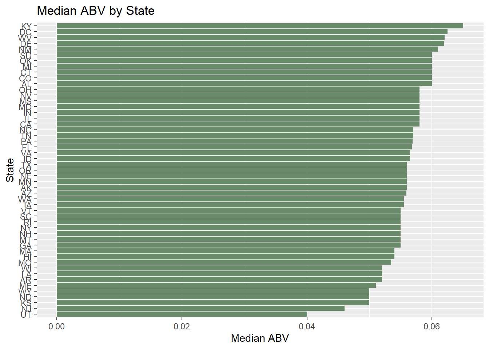
# Median IBU bar chart
df %>% group_by(State) %>%
summarise(med_ibu = median(IBU)) %>%
ggplot(aes(y=reorder(State, med_ibu), x=med_ibu)) +
geom_bar(stat='identity', fill='darkseagreen4') +
labs(x='Median IBU', y='State', title='Median IBU by State')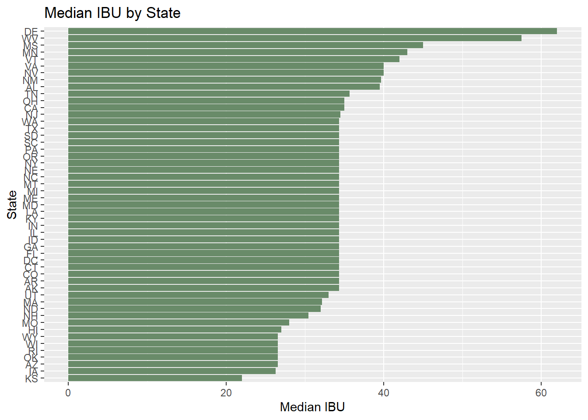 Both the median ABV and IBU charts do not show a lot of variation between states. 44/51 states have a median ABV between .05 and .06, and 40/51 states a median IBU between 30 and 50. Additionally, 25 states have an almost identical median IBU. This is most likely a product of these states having many missing IBU values that were imputed manually.
5. Which state has the maximum alcoholic (ABV) beer? Which state has the most bitter (IBU) beer?
# Find max ABV & IBU
max_ABV = max(df$ABV)
max_IBU = max(df$IBU)
df %>% filter(ABV == max_ABV)## Brewery_id Brewery City State
## 1 52 Upslope Brewing Company Boulder CO
## Beer Beer_ID ABV IBU
## 1 Lee Hill Series Vol. 5 - Belgian Style Quadrupel Ale 2565 0.128 26.55937
## Style Ounces Style_Group
## 1 Quadrupel (Quad) 19.2 Otherdf %>% filter(IBU == max_IBU)## Brewery_id Brewery City State Beer
## 1 375 Astoria Brewing Company Astoria OR Bitter Bitch Imperial IPA
## Beer_ID ABV IBU Style Ounces Style_Group
## 1 980 0.082 138 American Double / Imperial IPA 12 IPAABV_diff <- (max_ABV - mean(df$ABV)) / sd(df$ABV)
IBU_diff <- (max_IBU - mean(df$IBU)) / sd(df$IBU)
#ABV_diff ---> 5.09
#IBU_diff ---> 4.30The max ABV is .128 (12.8%), which is 5.09 standard deviations above the mean of .06. The max IBU is 138, which is 4.30 standard deviations above the mean of 40.97.
7. Is there an apparent relationship between the bitterness of the beer and its alcoholic content? Draw a scatter plot. Make your best judgment of a relationship and EXPLAIN your answer.
# Find correlation of IBU and ABV in df
cor_IBUABV = round(cor(df$IBU, df$ABV), 3)
# Make R label
label_x = paste(c("R =", cor_IBUABV), collapse = " ")
# IBU and ABV scatterplot (with R label)
ggplot(df, aes(x=IBU, ABV)) +
geom_point(size=2, color='darkseagreen3') +
geom_smooth(method='lm', color='darkseagreen4') +
labs(x='International Bittering Units (IBU)', y='Alcohol by Volume (ABV)', title='IBU vs ABV') +
geom_label(label=label_x, x=100, y=.025,label.padding = unit(0.55, "lines"), label.size = 0.35, color = "black", fill="#69b3a2")## `geom_smooth()` using formula 'y ~ x'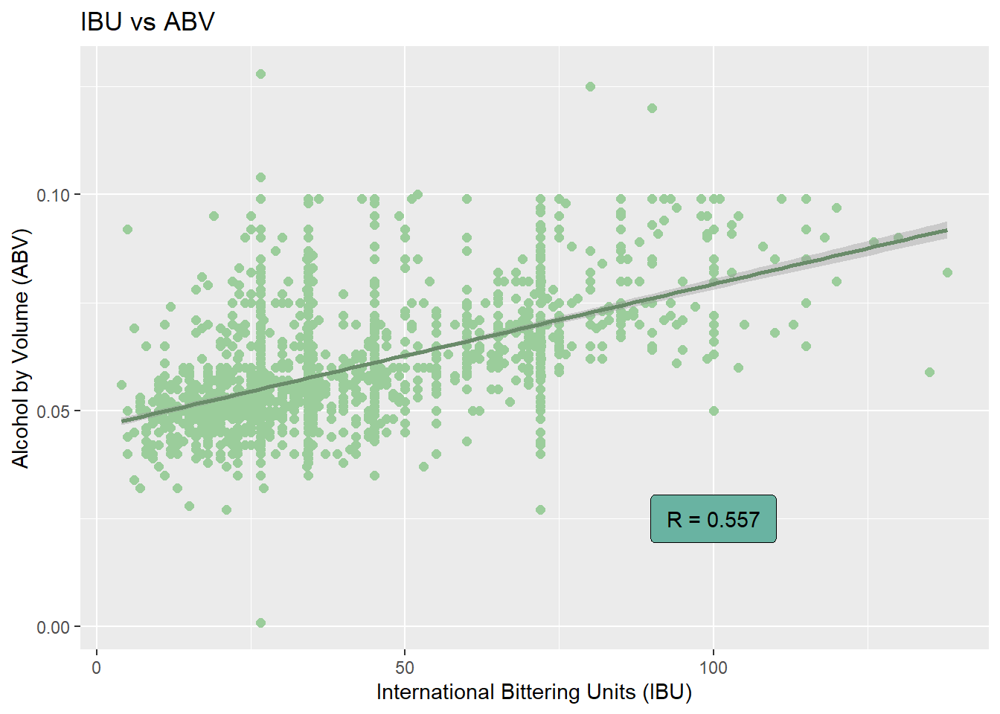 There is a moderate positive correlation between ABV and IBU (R = .0557). As either variable increases/decreases, we can moderately expect the other to move in the same direction.
8. Budweiser would also like to investigate the difference with respect to IBU and ABV between IPAs (India Pale Ales) and other types of Ale (any beer with “Ale” in its name other than IPA). You decide to use KNN classification to investigate this relationship. Provide statistical evidence one way or the other. You can of course assume your audience is comfortable with percentages … KNN is very easy to understand conceptually.
# Create new data frame with only Ale and IPA Beers
# Next, create dummy variable for Ale vs IPA
df_ale = df %>% filter(grepl("Ale", df$Style) == TRUE) %>% filter(Style != 'English India Pale Ale (IPA)')
df_IPA = df %>% filter(grepl("IPA", df$Style) == TRUE)
df_IPA$ale_IPA = 'IPA'
df_ale$ale_IPA = 'Ale'
new_df = rbind(df_ale,df_IPA)
new_df$ale_IPA = as.factor(new_df$ale_IPA)
new_df <- df %>% filter(Style_Group %in% c('Ale', 'IPA'))
# Perform KNN model using ABV and IBU
# Hyper-tune to be completed on K value
# First, standardize IBU and ABV values
new_df$zABV = as.numeric(scale(new_df$ABV))
new_df$zIBU = as.numeric(scale(new_df$IBU))
# Loop to find best value for K with 70/30 train-test split
iterations = 100
numks = 100
splitPerc = .70
masterAcc = matrix(nrow = iterations, ncol = numks)
masterSen = matrix(nrow = iterations, ncol = numks)
masterSpe = matrix(nrow = iterations, ncol = numks)
for(j in 1:iterations)
{
trainIndices = sample(1:dim(new_df)[1],round(splitPerc * dim(new_df)[1]))
train = new_df[trainIndices,]
test = new_df[-trainIndices,]
for(i in 1:numks)
{
classifications = knn(train[,c(7,8)],test[,c(7,8)],train$Style_Group, prob = TRUE, k = i)
table(classifications,test$Style_Group)
CM = confusionMatrix(table(classifications,test$Style_Group))
masterAcc[j,i] = CM$overall[1]
masterSen[j,i] = CM$byClass[1]
masterSpe[j,i] = CM$byClass[2]
}
}
MeanAcc = colMeans(masterAcc)
MeanSen = colMeans(masterSen)
MeanSpe = colMeans(masterSpe)
plot(seq(1,numks,1),MeanAcc, type = "l")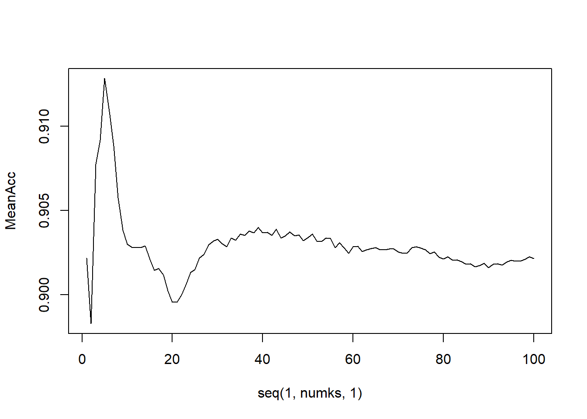
which.max(MeanAcc)## [1] 5max(MeanAcc)## [1] 0.9114783plot(seq(1,numks,1),MeanSen, type = "l")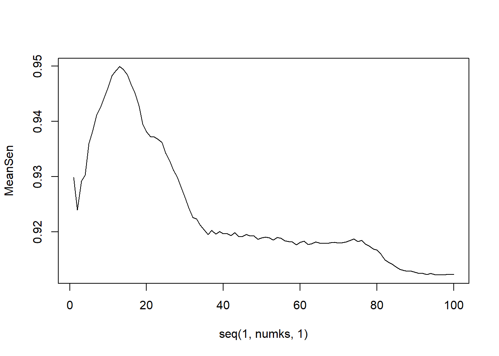
which.max(MeanSen)## [1] 13max(MeanSen)## [1] 0.9485251plot(seq(1,numks,1),MeanSpe, type = "l")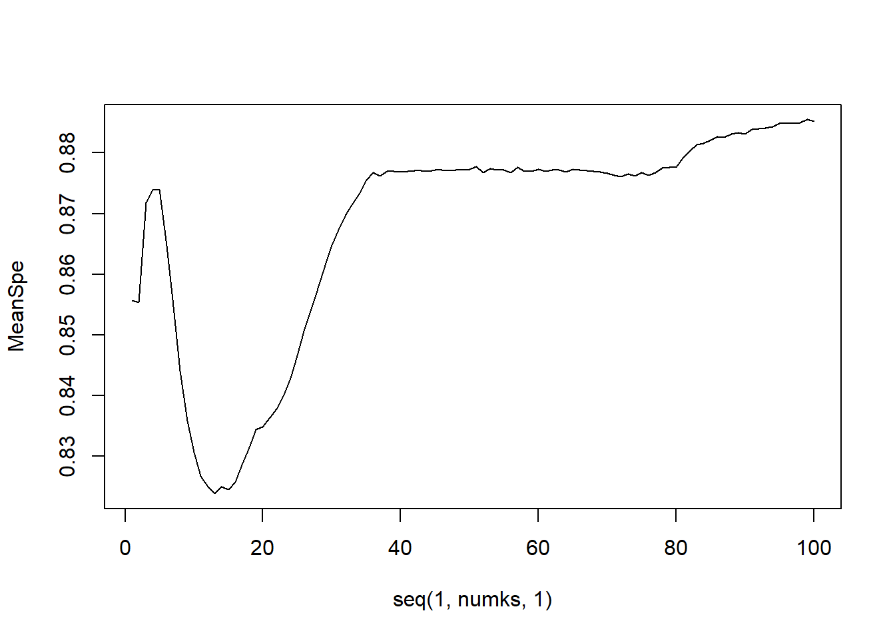
which.max(MeanSpe)## [1] 97max(MeanSpe)## [1] 0.8824015# K = 6 gives highest accuracy (81%)
# K = 10 gives highest sensitivity (87%)
# K = 62 gives highest specificity (73%)
# Run KNN model with K=6 for highest accuracy (per hyper tuning)
classifications = knn(train[,c(7,8)],test[,c(7,8)],train$Style_Group,prob = TRUE, k = 5)
confusionMatrix(table(classifications,test$Style_Group))## Confusion Matrix and Statistics
##
##
## classifications Ale IPA Lager Other Stout
## Ale 272 12 0 0 0
## IPA 20 156 0 0 0
## Lager 0 0 0 0 0
## Other 0 0 0 0 0
## Stout 0 0 0 0 0
##
## Overall Statistics
##
## Accuracy : 0.9304
## 95% CI : (0.9032, 0.9519)
## No Information Rate : 0.6348
## P-Value [Acc > NIR] : < 2.2e-16
##
## Kappa : 0.8515
##
## Mcnemar's Test P-Value : NA
##
## Statistics by Class:
##
## Class: Ale Class: IPA Class: Lager Class: Other
## Sensitivity 0.9315 0.9286 NA NA
## Specificity 0.9286 0.9315 1 1
## Pos Pred Value 0.9577 0.8864 NA NA
## Neg Pred Value 0.8864 0.9577 NA NA
## Prevalence 0.6348 0.3652 0 0
## Detection Rate 0.5913 0.3391 0 0
## Detection Prevalence 0.6174 0.3826 0 0
## Balanced Accuracy 0.9300 0.9300 NA NA
## Class: Stout
## Sensitivity NA
## Specificity 1
## Pos Pred Value NA
## Neg Pred Value NA
## Prevalence 0
## Detection Rate 0
## Detection Prevalence 0
## Balanced Accuracy NAA KNN model using k=5 was found to produce the highest average accuracy at 91.3%. Therefore, an optimized KNN model could accurately predict >90% of beers as Ales or IPAs based solely on their ABV and IBU. This tells us that ABV and IBU is homogenous within the Ale or IPA style or sub-styles. Basically, if a beer with X ABV and Y IBU is an Ale, it is likely that the majority of the most similar beers are Ales as well.
8.5: Additional Modeling
In addition, while you have decided to use KNN to investigate this relationship (KNN is required) you may also feel free to supplement your response to this question with any other methods or techniques you have learned. Creativity and alternative solutions are always encouraged.
# Using Naive-Bayes to investigate relationship
# Set seed and create Train/Test Split
set.seed(10)
trainIndices = sample(seq(1:length(new_df$Beer_ID)),round(.7*length(new_df$Beer_ID)))
train_nb = new_df[trainIndices,]
test_nb = new_df[-trainIndices,]
# Create model and print confusion matrix
model = naiveBayes(train_nb[,c(7,8)],train_nb$Style_Group,laplace = 1)
table(predict(model,test_nb[,c(7,8)]),test_nb$Style_Group)##
## Ale IPA Lager Other Stout
## Ale 269 22 0 0 0
## IPA 20 149 0 0 0
## Lager 0 0 0 0 0
## Other 0 0 0 0 0
## Stout 0 0 0 0 0CM = confusionMatrix(table(predict(model,test_nb[,c(7,8)]),test_nb$Style_Group))
CM## Confusion Matrix and Statistics
##
##
## Ale IPA Lager Other Stout
## Ale 269 22 0 0 0
## IPA 20 149 0 0 0
## Lager 0 0 0 0 0
## Other 0 0 0 0 0
## Stout 0 0 0 0 0
##
## Overall Statistics
##
## Accuracy : 0.9087
## 95% CI : (0.8786, 0.9334)
## No Information Rate : 0.6283
## P-Value [Acc > NIR] : < 2.2e-16
##
## Kappa : 0.8041
##
## Mcnemar's Test P-Value : NA
##
## Statistics by Class:
##
## Class: Ale Class: IPA Class: Lager Class: Other
## Sensitivity 0.9308 0.8713 NA NA
## Specificity 0.8713 0.9308 1 1
## Pos Pred Value 0.9244 0.8817 NA NA
## Neg Pred Value 0.8817 0.9244 NA NA
## Prevalence 0.6283 0.3717 0 0
## Detection Rate 0.5848 0.3239 0 0
## Detection Prevalence 0.6326 0.3674 0 0
## Balanced Accuracy 0.9011 0.9011 NA NA
## Class: Stout
## Sensitivity NA
## Specificity 1
## Pos Pred Value NA
## Neg Pred Value NA
## Prevalence 0
## Detection Rate 0
## Detection Prevalence 0
## Balanced Accuracy NAA Naive-Bayes model has similar results to our optimized KNN. This model has a >90% accuracy rate, meaning that it can predict correctly if a beer is an Ale or IPA with only the ABV and IBU (and some probability calculations).
9. Knock their socks off! Find one other useful inference from the data that you feel Budweiser may be able to find value in. You must convince them why it is important and back up your conviction with appropriate statistical evidence.
Load in Regions data and visualize.
# Load in regions data
regions = read_csv(url('https://raw.githubusercontent.com/ericlaigaie/Case-Study-01/main/regions_v2.csv'))## Rows: 51 Columns: 3## -- Column specification --------------------------------------------------------
## Delimiter: ","
## chr (3): State, Region, State Abbreviation##
## i Use `spec()` to retrieve the full column specification for this data.
## i Specify the column types or set `show_col_types = FALSE` to quiet this message.# remove State Column and rename abbreviations to 'State' to merge
regions = subset(regions, select = -c(State))
names(regions)[2] = 'State'
df = merge(df,regions,"State")
# Prep data for choropleth
df$Region <- as.factor(df$Region)
regions <- regions %>% arrange(State)
# Designate region & value
choro_df <- data.frame('region' = states$State, 'value' = regions$Region)
# Create Choropleth
state_choropleth(choro_df,
num_colors=7,
zoom = continental_us_states) +
scale_fill_brewer(palette="Set1") +
labs(title = "Regions",
fill = "n") +
guides(fill=guide_legend(title="Region"))## Scale for 'fill' is already present. Adding another scale for 'fill', which
## will replace the existing scale.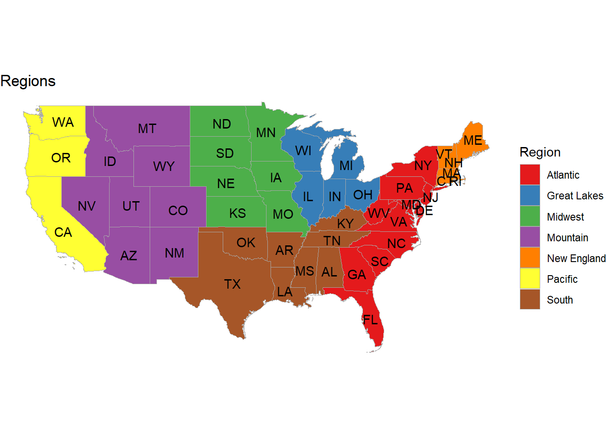 This is a map of our regions. The next code cell will use statistical tests to examine how ABV and IBU distributions differ between regions.
Checking Assumptions of ANOVA
# ABV
ggplot(df, aes(x=ABV, y=Region)) + geom_boxplot()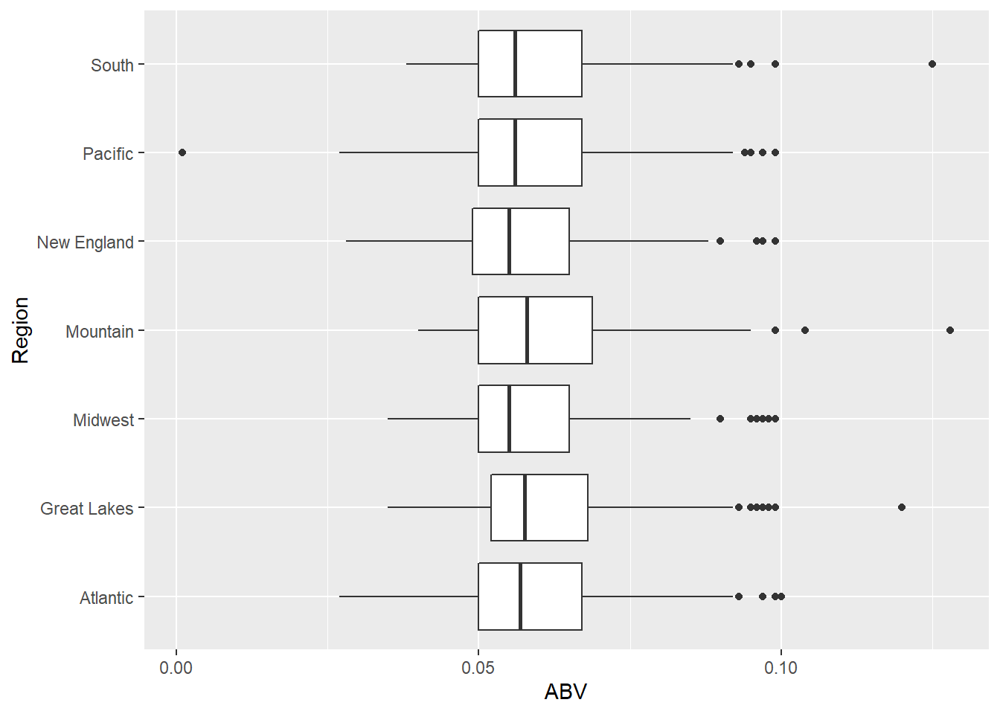
ggplot(df, aes(x=ABV)) + geom_histogram() + facet_wrap(~Region)## `stat_bin()` using `bins = 30`. Pick better value with `binwidth`.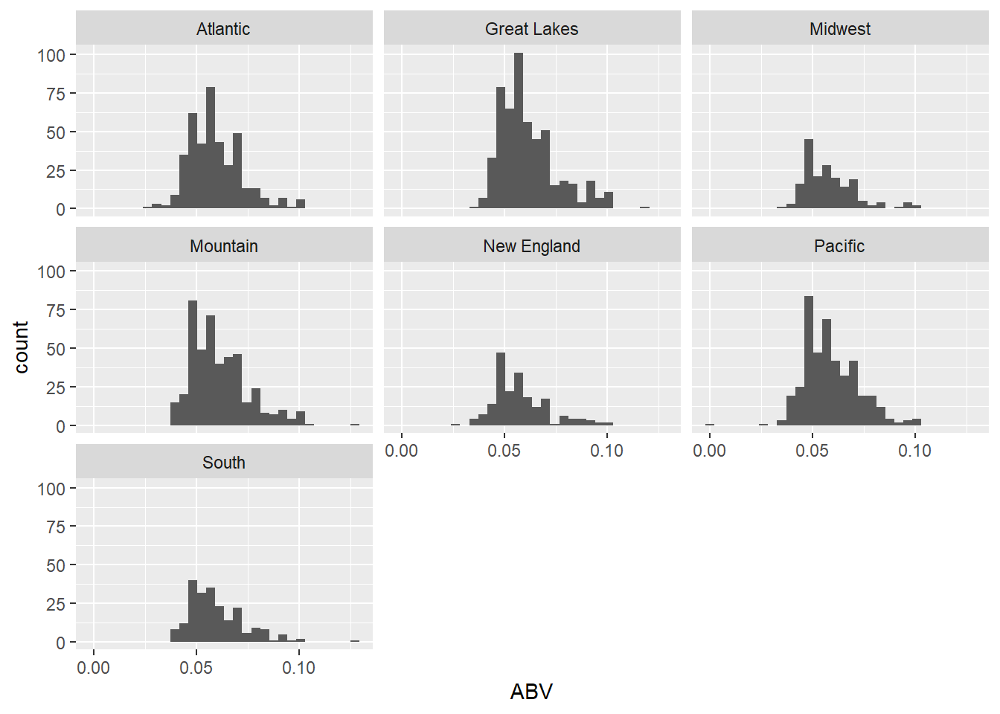
# IBU
ggplot(df, aes(x=IBU, y=Region)) + geom_boxplot()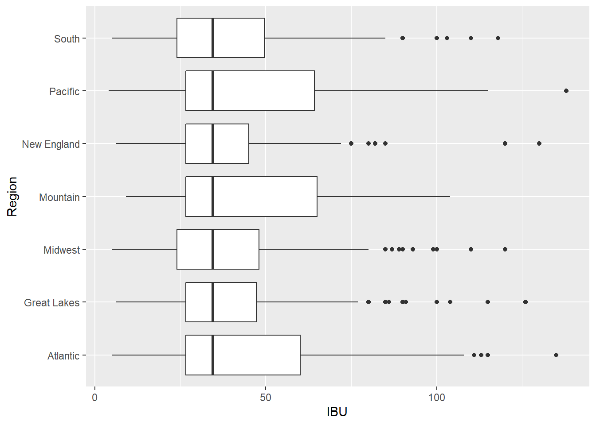
ggplot(df, aes(x=IBU)) + geom_histogram() + facet_wrap(~Region)## `stat_bin()` using `bins = 30`. Pick better value with `binwidth`.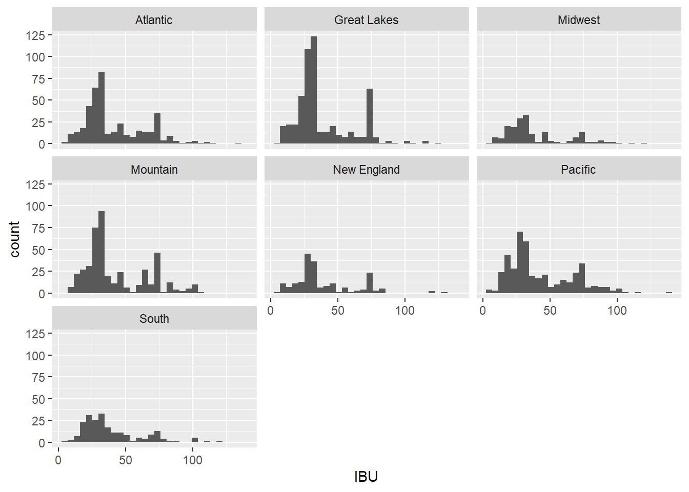
# We are assuming independence both with-in and between groups.ABV: While regions have similar variances, I can’t say that they are normally distributed. Although the CLT may allows us to bypass this assumption, I will stick with a non-parametric test to be safe.
IBU: There is overwhelming evidence that the distributions are not normal and that regions do not have similar variance. Because of this, a non-parametric test is required.
Kruskal Wallis Test
kruskal.test(ABV~Region, df)##
## Kruskal-Wallis rank sum test
##
## data: ABV by Region
## Kruskal-Wallis chi-squared = 24.969, df = 6, p-value = 0.000346# P-value < .05, so we say that there is evidence to suggest that at least one of the Region median ABVs is significantly different from the others.
kruskal.test(IBU~Region, df)##
## Kruskal-Wallis rank sum test
##
## data: IBU by Region
## Kruskal-Wallis chi-squared = 11.366, df = 6, p-value = 0.07772# P-value > .05, so we say that there is not enough evidence to suggest that there is a difference in Region-specific ABV medians.The Kruskal-Wallis test provides sufficient evidence to suggest that at least one region has a mean ABV that differs significantly from the others. Further testing down below (P-value = .00035).
The Kruskal-Wallis test suggests that there is not enough evidence to say that any region’s mean IBU differs significantly from any others. No further testing needed (P-value = .0778).
To find which exact regions have differing median ABVs, we will use Rank Sum Tests. The function below calculates all combinations of the regions in our df and tests them using wilcox.test.
regions <- unique(as.character(df$Region))
# Pull regions into a list
wilcoxon_tester <- function(myVar) {
region_x <- character()
region_y <- character()
p_value <- numeric()
for (i in 1:length(regions)) {
for (j in 1:length(regions)) {
if (j != i) {
j_df <- df %>% filter(Region == regions[j]) %>% pull({{myVar}})
i_df <- df %>% filter(Region == regions[i]) %>% pull({{myVar}})
test <- wilcox.test(x=j_df, y=i_df, alternative='two.sided')
if (test$p.value < .05) {
region_x <- append(region_x, regions[i])
region_y <- append(region_y, regions[j])
p_value <- append(p_value, round(test$p.value, 4))
}
}
}
}
wilcox_results <- data.frame('Region_x'=region_x, 'Region_y'=region_y, 'P_value'=p_value)
}
# Testing....will print out all tests that are significant.
wilcox_results <- wilcoxon_tester(ABV)
# Filters out all even rows (each test result is duplicated)
wilcox_results <- wilcox_results %>% arrange(P_value)
wilcox_results$odd <- seq_len(nrow(wilcox_results)) %% 2
wilcox_results %>% arrange(Region_x) %>% filter(odd == 1)## Region_x Region_y P_value odd
## 1 Atlantic Great Lakes 0.0409 1
## 2 Midwest Great Lakes 0.0024 1
## 3 Mountain New England 0.0004 1
## 4 Mountain Midwest 0.0055 1
## 5 New England Great Lakes 0.0001 1
## 6 New England Atlantic 0.0310 1
## 7 Pacific Great Lakes 0.0144 1
## 8 Pacific Mountain 0.0259 1The Rank Sum Tests above tell us that 8 out of the 21 region combinations have significantly different mean ABVs. Displayed along the two regions is the p-value from the associated test.
Interesting Notes: A. The ‘South’ region does not appear. Therefore, it is similar to all other regions. B. The ‘Great Lakes’ region appears 4 times, making it the most unique region.
Conclusion:
In conclusion, we found that the breweries in the US are mostly located in high density states like Texas and California. We saw that the median beer ABV does not vary that much between states, and the ABV distribution shows a tail of more alcoholic beers towards the higher end of the ABV spectrum. This observation is consistent with the idea that craft beers are becoming more and more popular in the US. We also saw a moderate positive correlation between ABV and IBU. Our hypothesis is that this correlation exists because adding hops, a key ingredient in most beers, will make a beer more alcoholic and more bitter. Although the craft beer trend is rising, Budweiser would likely benefit from a lower ABV beer, possibly because most people do not enjoy the bitterness. To further analyze the correlation between ABV and IBU, particularly in Ales vs IPA’s, we ran the data through a KNN model. The model came to show that, given a beer’s ABV and IBU, we could predict whether that beer was an Ale or IPA with an accuracy of over 91%! We also had very similar accuracy results when using a Naïve-Bayes model. In both cases, the models showed that ABV and IBU do not significantly vary in beer styles. Finally, our statistical tests (Kruskal-Wallis & Rank Sum) highlights which regions had significantly different mean ABVs or IBUs. Using the feedback from these tests, Budweiser can consider how the ABV of a new product would fit into each region’s existing range of beers.
6. Comment on the summary statistics and distribution of the ABV variable.
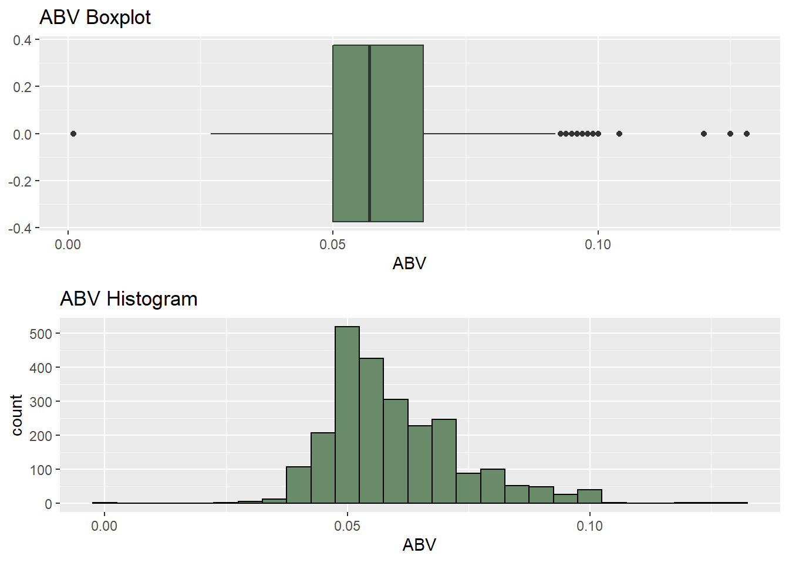
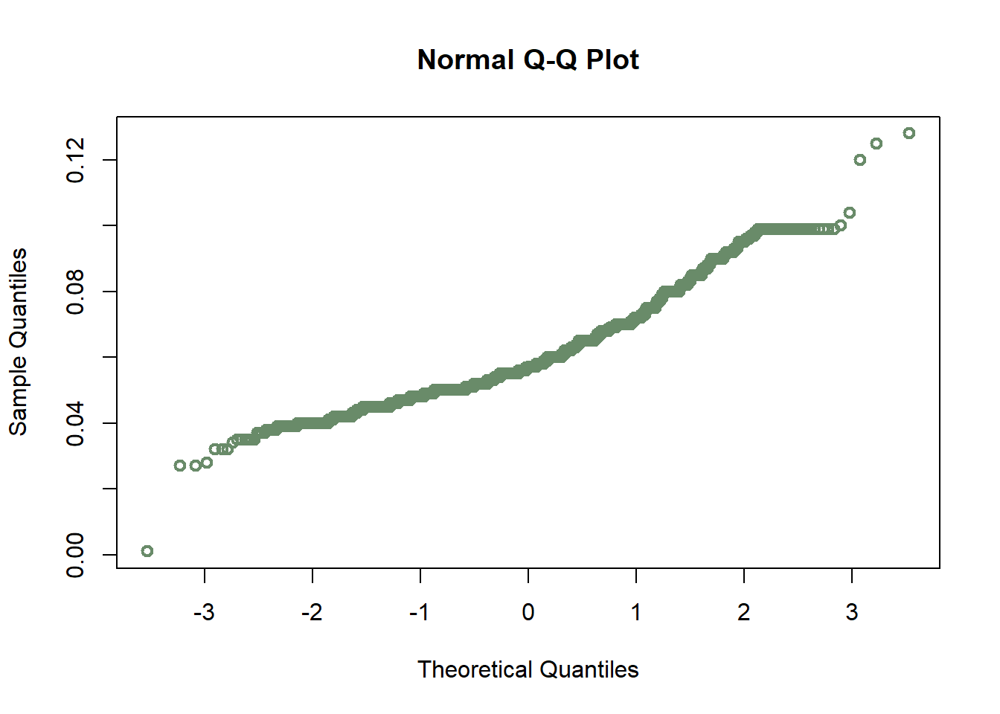 Using both graphical and statistical methods, we concluded that the ABV distribution is skewed right. While there is a large numbers of beers centered around the mean of .06, there is a tail of more alcoholic beers towards the higher ABV side.